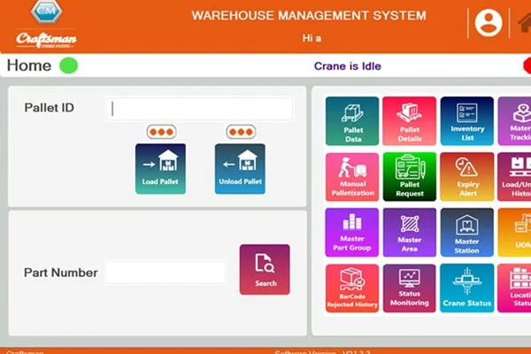

Warehouse Management System
The automation of a warehouse, or part of it, involves automating its management. A Warehouse Management System is used to plan, organise and optimise your warehouse operations. The WMS Software aims ensure that you can provide the right goods at the right time while optimising both efficiency and costs.

All reports can be exported in three different formats: CSV, Excel, and PDF.

The reception process is responsible for managing the entry of the goods from different
sources into the warehouse i.e. purchases from suppliers, transfer of goods between centres,
production orders, customer returns, etc. Errors in receiving, unlike most other errors in
your warehouse, have a ripple effect. The entry of goods starts with the reception process,
whereby the diversity, the quantity, the characteristics and the condition or quality of the
goods entering the warehouse, to become stock, are accurately controlled. To do this, the
information collected is compared with the order received from the ERP for higher inventory
accuracy.
Managing where the goods should be deposited follows the 'location processes', which are
governed by previously established rules and strategies. These processes are responsible for
administering the order in which goods are placed in the warehouse, determining the best
location according to their type, characteristics, dimensions, etc. It properly distributes
product locations in the different aisles to ensure an adequate response to outgoing
operations. Grouping and various processes are governed by the system hence reducing human
work-load. Our WMS intelligently directs warehouse operators, AS/RS stacker cranes, shuttles
and conveyors to put away material in stock locations that optimise storage and reduce
material handling and fulfilment costs.
Three strategies to place stock in warehouse:
- Location through Rules & Strategies
- Management of replenishment & Consolidation tasks
- Cross Docking
Stock management is a very prominent feature in the WMS because through it, real-time
visibility of the location, the status, the amount and characteristics of the warehouse
stock is secured. The administration is performed with the help of an ERP. All functions of
the WMS can be integrated into the rest of the company’s management system which enables the
Real time inventory management.
Inventory management features are:
- Real time Storage Usage
- Supports Bar code
- User Friendly experience
- First in First out (FIFO)
On-time and accurate shipments are key to meeting the perfect order experience which is
expected by todays customers. In addition to managing the receipt and location of goods, the
management system also controls the dispatch of goods. The WMS deals with processes like,
the preparation of the orders that are shipped to customers, transfers to other warehouses
or returns to suppliers. In short, they are responsible for the exit and drops in the
warehouse stock via operations like picking, Packing, Sorting orders and their dispatch. The
best pick and dispatch practices of industry leaders are imbibed in our software thereby
acting as a guide during these processes, ensuring hassle free operation and enabling the
fastest-error-free order fulfilment which wins the customer. The goods for dispatch are then
delivered in the right sequence to the respective loading docks using an intelligent Dock
Management Systems (DMS). The delivery confirmation is then automatically captured and fed
to the ERP as a proof of delivery.
We understand the importance of data security and our software runs on the latest encryption
protocols. All data is stored locally and can be backed up remotely using Cloud services.
Security is provided through user passwords and Access Authority Levels. Authorization for
data access can be granted or revoked by accessing our user rights management feature.
Special privileges can be granted on a need basis for system administrators, auditors,
management personnel.